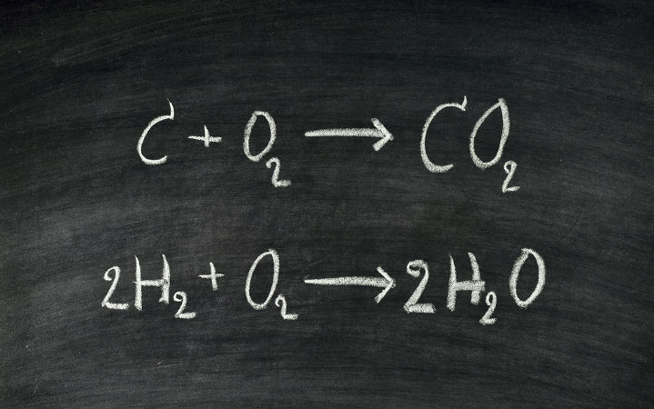

Química
Estude de forma plena conteúdos da língua portuguesa.
Balanceamento de Equação
O balanceamento de equações químicas é um recurso muito utilizado na Química, principalmente em Estequiometria, Termoquímica, Cinética Química e Mistura de Soluções. Por intermédio do balanceamento, temos uma noção sobre a quantidade de matéria de cada um dos componentes da equação.
De forma prática, realizar o balanceamento de uma equação química é igualar a quantidade dos átomos dos elementos presentes nos reagentes com a quantidade desses mesmos átomos dos elementos presentes nos produtos. O recurso que utilizamos para realizar o balanceamento de uma equação química é a utilização de números inteiros, denominados de coeficientes, posicionados sempre à esquerda da fórmula da substância, seja ela do produto, seja do reagente. Convencionalmente, sempre utilizamos os menores números inteiros possíveis.
Veja a representação a seguir:
aA + bB → cC.
As letras a, b e c representam os números (coeficientes) que tornam a equação balanceada.
Como o balanceamento de equações é feito sempre por tentativa, não existem regras específicas que nos ajudem. Todavia, algumas orientações podem ser úteis.
Orientações para o balanceamento de equações

Termoquímica
A Termoquímica é uma parte da química que estuda as trocas de calor, ou seja, a transferência de energia envolvida durante as reações químicas.
Na termoquímica, as reações químicas que ocorrem durante as trocas de energia na forma de calor são divididas em reações exotérmicas e endotérmicas:
Reação Endotérmica é aquela em que há absorção de energia. Nesse processo, a energia é produzida e, de forma independente, é mantida.
Reação Exotérmica é aquela em que há liberação de energia. Nesse processo, a produção de energia somente persiste mediante o fornecimento contínuo de energia.
Reações inorgânicas
Reações inorgânicas são fenômenos químicos que envolvem a utilização e a formação de substâncias inorgânicas, como ácidos, bases e sais.
As substâncias que rotineiramente participam como reagentes de uma reação inorgânica são ácidos, bases, sais, óxidos, carbetos, hidretos, sulfetos, peróxidos e superóxidos.